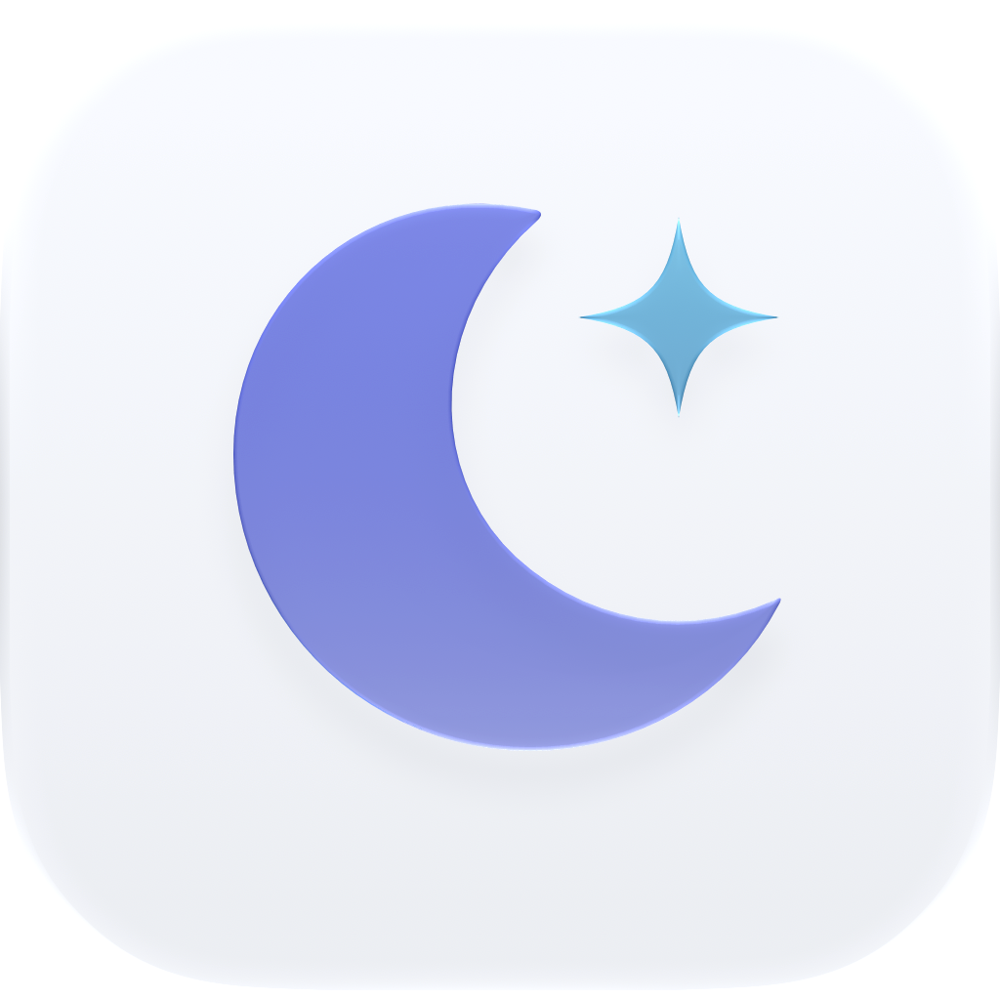
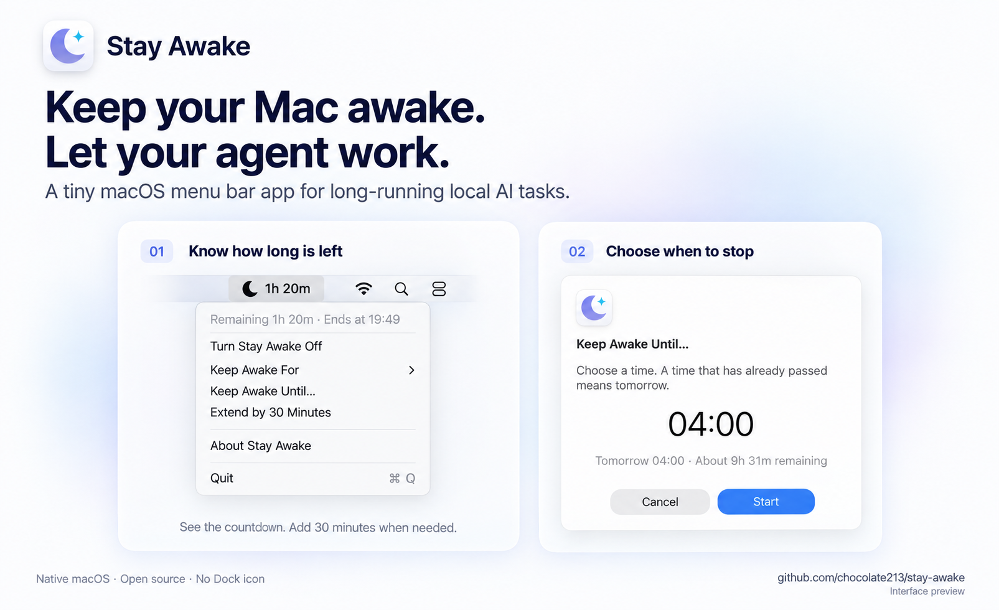

A little longer.
Or all night.
Pick a preset from 15 minutes to 8 hours, set a custom duration, or stay awake until you stop it.
15 min1 hour8 hoursOn

Stay AwakeYOUR AGENT’S NIGHT SHIFT
Your ideas don’t clock out. Neither should your Mac.
Keep it awake while your local AI agent does its thing.
macOS 11+ · Free & open source · Native & lightweight
A LITTLE MOON. A LOT OF MOMENTUM.
That long build. The next test run. One more agent iteration.
Stay Awake keeps idle sleep from interrupting the work, using your Mac’s built-in caffeinate command.
Pick a preset from 15 minutes to 8 hours, set a custom duration, or stay awake until you stop it.
Choose a clock time. If it’s already passed today, Stay Awake knows you mean tomorrow.
A countdown in your menu bar. A quick 30-minute extension. No Dock icon or expiry notifications.
MADE TO FEEL AT HOME
Familiar controls. English and 简体中文.
Everything you need, one moon away.

Interface illustration. Appearance varies by macOS version.
FROM DOWNLOAD TO DEEP WORK
Download the ZIP, move Stay Awake to Applications,
then find the moon in your menu bar.
Releases are ad-hoc signed, not notarized. If macOS blocks opening, review the app in System Settings → Privacy & Security. Installation guide ↗
Our README includes release downloads, checksum verification, and installation from source.
Read the agent instructions ↗Stay Awake prevents idle sleep. It doesn’t bypass lid-close sleep, run agents, or override their approvals and usage limits.